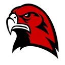
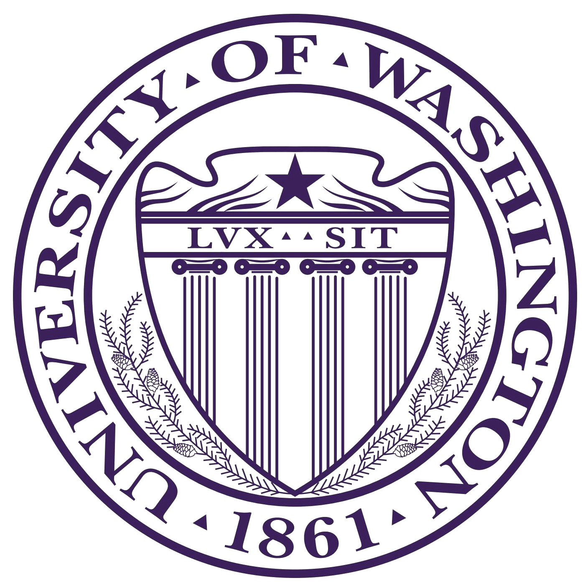
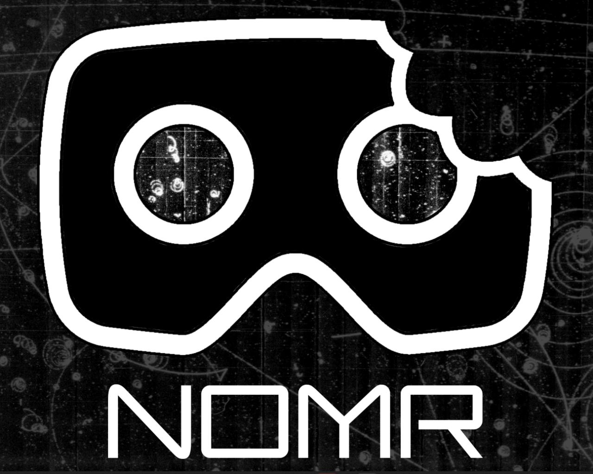

Mountlake Terrace High School
- Graduated with a 3.9 GPA, Honors STEM Diploma
- Four years of Arduino club and two years in FIRST Robotics
- Robotics team placed fourth globally in the world finals in Houston, Texas


